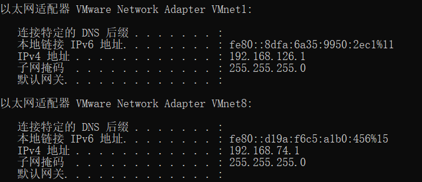
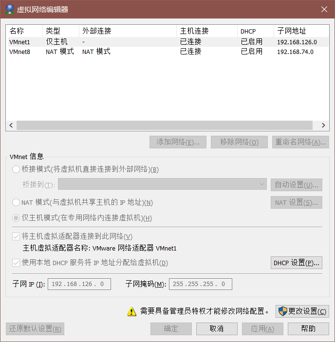
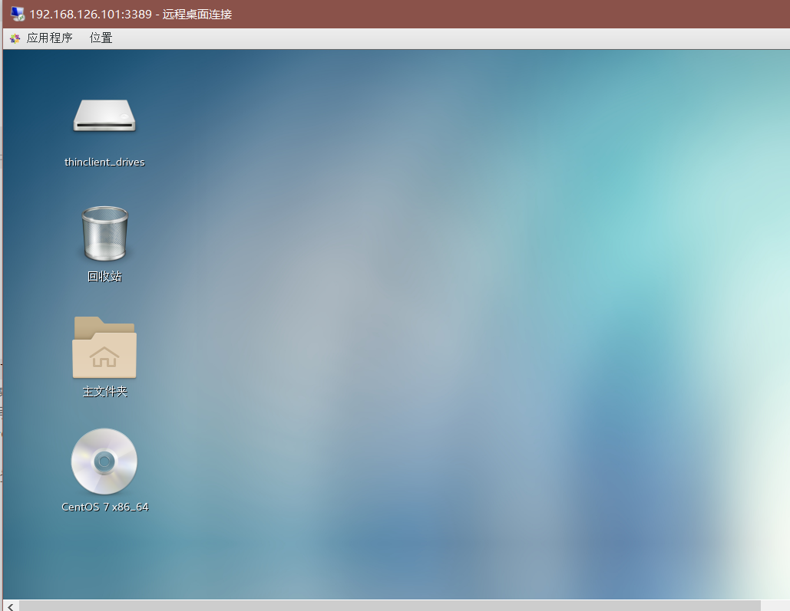

这是安装配置你的私有云的实验报告,主要是为了初步了解虚拟化技术和记录搭建私有云中遇到的问题.
下载安装
配置VMware
配置VMware虚拟的网络,因为VMware很贴心的创建了2个虚拟网卡(NAT和Host-Only),所以我们按需要做些许更改即可.
通过windows命令行窗口输入
ipconfig即可查看这两个虚拟网卡的ip地址.
VMnet1是Host-Only的网卡, VMnet8是NAT的网卡.
如果需要虚拟网络配置: VMware菜单 -> 编辑 -> 虚拟网络编辑器

更改子网IP为你需要的即可.
创建虚拟机
- 点击新建虚拟机,然后根据引导进行面向下一步的安装即可.
- 注意iso选择之前下载的Centos.iso
- 最大磁盘大小选择30GB以上
- 自定义硬件, 添加第二块虚拟网卡, 选择Host-Only模式
- 创建过程中如果出了什么问题也不必惊慌,得益于VMware强大的功能,基本上任何配置都可以在创建完虚拟机后在重新设置的.
安装Centos
- 创建完虚拟机后, 点击开启此虚拟机即可开始安装Centos.
- 根据引导完成安装即可
配置Centos网络
- 输入
nmtui, 配置第二块网卡地址, 因为我们需要通过第二块网卡远程虚拟机,所以我们需要手动给它设置一个ip地址.还记得我们配置的第二块虚拟网卡的ip地址吗?(不记得查一下就好啦),将网卡地址设置成和VMnet1(Host-Only)同一个网段即可(这里是192.168.126.X) - 输入
ip addr查看网络配置,如果看见了两个网卡信息就说明配置成功啦. - 因为第二块网卡不是开机自动启动的, 输入
nmtui在第二块网卡的选项中选择开机自动启动即可(选项前有[x]表示确认) - 检查网络
- 虚拟机ping外网
ping www.baidu.com - 虚拟机ping主机
ping 192.168.126.1(有可能会ping不通,可以尝试关闭宿主机的防火墙在试试) - 宿主机ping虚拟机
ping 192.168.126.x(第二块网卡的ip地址)
- 虚拟机ping外网
升级OS内核
- 安装wget
yum install wget - 升级OS内核
yum update- 可能会出现安装失败的情况,可以尝试更换yum源为163源或阿里源,更换介绍
- 完成后关闭虚拟机,在菜单栏选择关闭虚拟机或者输入
halt
克隆虚拟机
- 右键点击虚拟机->管理->克隆,然后格局克隆向导完成克隆,注意选择链接复制(节省磁盘空间)和更改虚拟机的MAC地址
- 开启克隆的虚拟机配置虚拟网卡, 将第二块虚拟网卡ip和原虚拟机ip有区别即可.
使用ssh
- 虚拟机需要开机
- 在宿主机命令行输入
ssh root@192.168.126.100- ip地址使用NAT或是Host-only的网卡都可以,但因为NAT使用的是DHCP分配的地址,每此都需要使用
ip addr查看. - 键入
Ctrl+d退出远程
- ip地址使用NAT或是Host-only的网卡都可以,但因为NAT使用的是DHCP分配的地址,每此都需要使用
远程桌面控制
因为Centos是不含RDP的,所以我们需要下载XRDP来支持RDP
下载安装
1
2
3yum install epel-release #包含xrdp的库
yum install xrdp
yum install tigervnc-server设置登陆密码
vncpasswd root
开启Xrdp服务
1 | systemctl start xrdp |
- 关闭防火墙
1 | systemctl stop firewalld.service |
关闭SELinux
- vim /etc/selinux/config
- 修改
SELINUX=disabled
安装GUI
yum groupinstall "GNOME Desktop"
使用远程桌面
- windows下键入
Ctrl+r,然后输入mstsc打开远程桌面终端或者直接通过小娜搜索远程桌面即可. - 计算机为虚拟机第二块网卡的ip或ip:端口号
- 虚拟机中输入
netstat -antup | grep xrdp查看Xrdp监听的端口号, 默认为3389.
- 虚拟机中输入
- 连接后输入用户名密码即可完成连接, 初次登陆需要加载较长时间和进行初始化设置.

- windows下键入